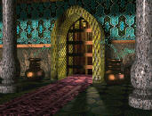
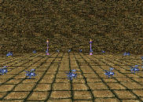
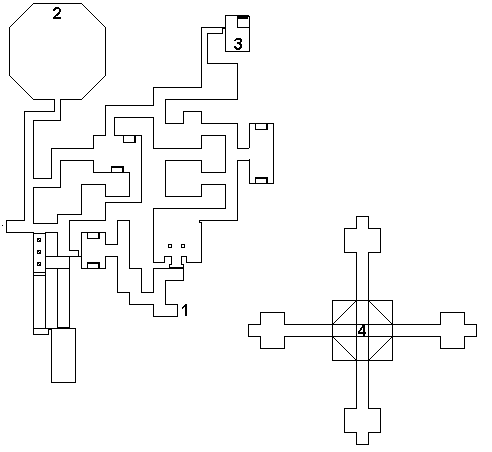

| Shadow Guild | |
| 1. | Entrance |
| 2. | Note stating that the Prince has moved to Free Haven sewers. To activate the teleporter: Stand at the entry of the door, facing north. Now notice the darker tiles on the floor, jump on those in a half left circle till you reach the opposite side of the entry wall. If you do it right, you will hear a click each time you jump on the tile. Then you will be teleported. |
| 3. | A teleporter will open after you did the "jump-play" in room 2. |
| 4. | You will be teleported into this room by using the teleporter from room 3. This room has four riddles.
Behind each door you will find a teleporter: North: Free Haven South: Dragoon's Caverns (Castle Ironfist) West: Back to entry of cave East: Shadow Guild Hideout (Castle Ironfist) |
If you have high enough perception you can see all of the floor tiles that will set off traps.There are many of them.
The Prince is actually in the Sewers of Free Haven but I'll get a map up soon.
Riddles
| North | FISH |
| South | TIME |
| West | ARROW |
| East | DARK |
Leave us a message mgrounds@hotmail.com